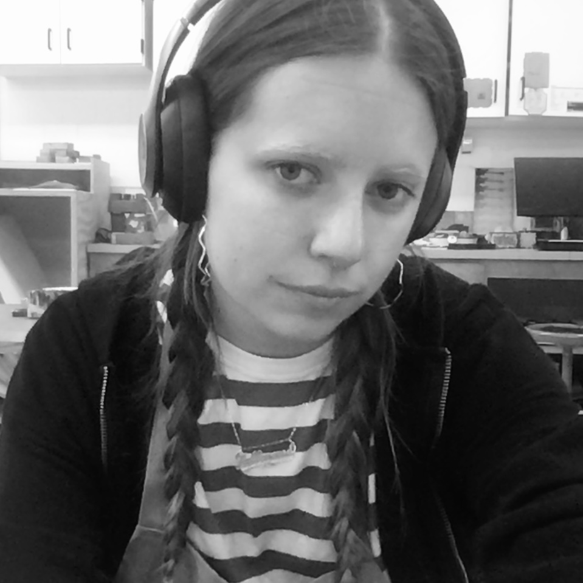
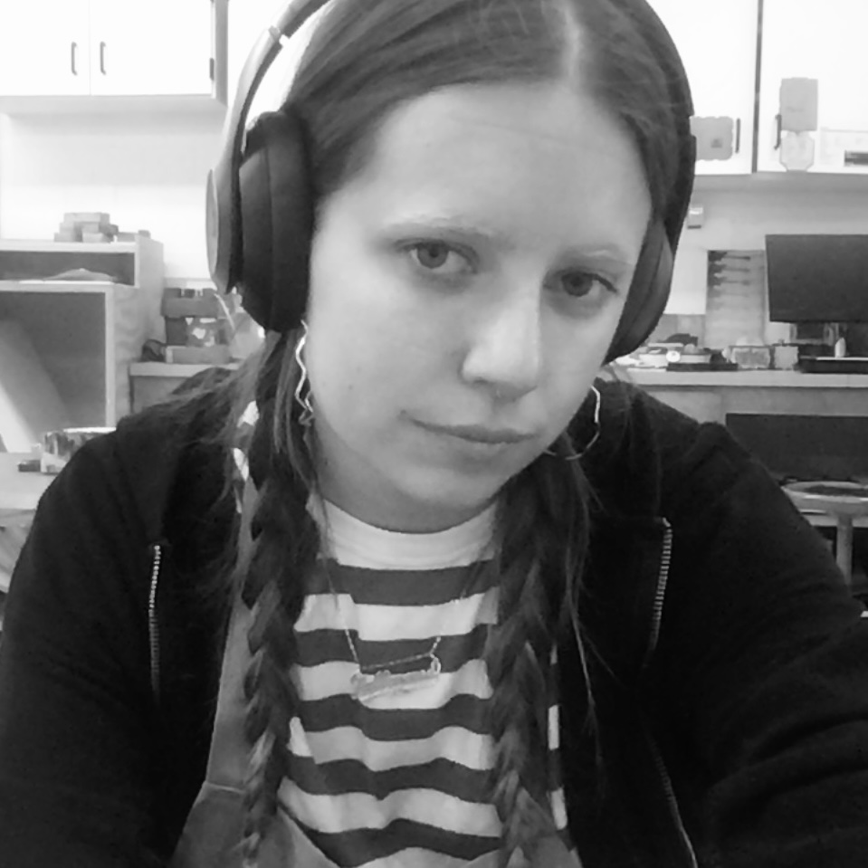

Ava Zaffarano
Hi, I'm Ava — a student Graphic Designer studying at Central Michigan University, where I'm exploring the sweet spot between visual communication and human connection.
Design should do something—start a dialogue, solve a problem, or make someone pause. Whether I'm building a brand identity or designing a poster, I approach every project like a lemonade stand: simple, honest, and built to bring people in.
My Experience
My work spans branding, print, typography, and a growing curiosity for pixel art and animation. Outside of school, I've had the opportunity to work an internship in Bristol, England for a creative communications company. The year prior, I studied digital illustration and art history in Florence, Italy. This upcoming summer, I will be the Craft Specialist at a summer camp on Lake Michigan, managing the craft house and teaching campers how to utilize their creativity.
I'm always on the lookout for projects that let me learn, collaborate, and create something meaningful. If you're into bold ideas, thoughtful details, and designs that feel like conversations, let's connect.